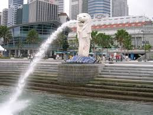

観光名所

マーライオン公園
マーライオン公園は、かの有名な「マーライオン像」があるウォーターフロントの公園です。また、SPECTRA – 光と水のシンフォニーという無料で見ることができる噴水ショーもおこなっていて写真撮影にもってこいのおすすめスポットです。

マリーナベイ・サンズ
マリーナベイ・サンズは世界最大級の最高級統合型リゾートです。3つの巨大な客室タワーの屋上を繋ぐ巨大な船型のプールであるインフィニティプールからの景色は圧巻です。シンガポール最大級のカジノや56階にある展望デッキであるサンズ・スカイパークも楽しむことができます。